Dateien
Alles liegt für
Sie bereit.
Was für den Entwurf neu entstanden ist, liegt hier sortiert in zehn Ordnern: Unterlagen, Drucksachen, Untersetzer, Sticker, Postkarten, Beigaben, Zeichen und Logo, die Ansichten der Website, der Feed und die Mails. Sie können jede Datei ansehen und herunterladen.
- Ordner
- 10
- Dateien
- 207
- Stand
- 03.11.26
01
Unterlagen
Ihre Karten im Satz der neuen Seite und die Unterlagen zum Entwurf, jede als PDF.
7 Dateien


02
Drucksachen
Aushang, Karten, Einladung, Gutschein, Briefpapier und mehr, druckfertig mit Beschnitt.
14 Dateien
 GutscheinPDF · 87 KB
GutscheinPDF · 87 KB
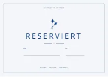
Tischkarte «Reserviert»PDF · 86 KB
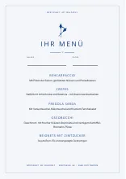
Menükarte für Ihre FeierPDF · 154 KB
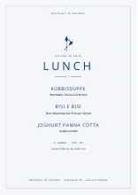
Lunch-TafelPDF · 19 KB
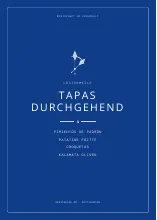
Aufsteller der LästermeilePDF · 89 KB Aushang BetriebsferienPDF · 15,5 MB
Aushang BetriebsferienPDF · 15,5 MB
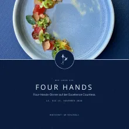
Einladung Four HandsPDF · 14,7 MB
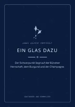
Kärtchen zum GlasPDF · 52 KB
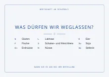
Allergien am PlatzPDF · 16 KB
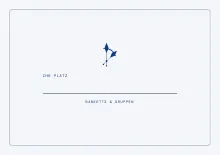
Platzkarte für BankettsPDF · 46 KB Ein Besen statt eines SchildsPDF · 133 KB
Ein Besen statt eines SchildsPDF · 133 KB
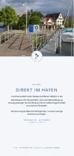
Der Weg ans WasserPDF · 7,8 MB VisitenkartePDF · 40 KB
VisitenkartePDF · 40 KB
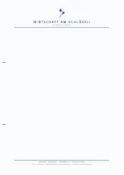
BriefpapierPDF · 109 KB
03
Untersetzer
Der Druckbogen mit Schnittlinien, jeder Untersetzer einzeln und alle als Bild.
14 Dateien

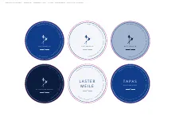
Untersetzer, Druckbogen A3PDF · 93 KB
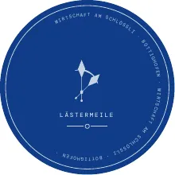
Untersetzer, alle einzelnPDF · 195 KB
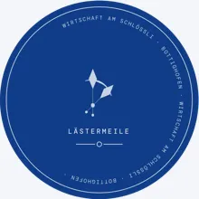
Die ZeigerPNG · 121 KB
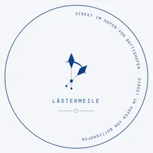
Direkt im HafenPNG · 110 KB
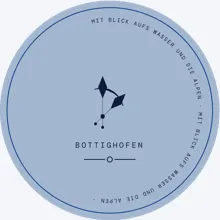
SeehimmelPNG · 114 KB
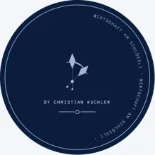
By Christian KuchlerPNG · 111 KB
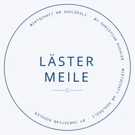
LästermeilePNG · 122 KB
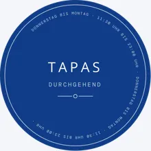
Tapas durchgehendPNG · 128 KB
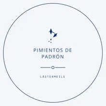
Pimientos De PadrónPNG · 84 KB
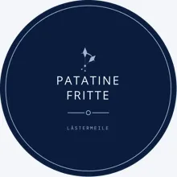
Patatine FrittePNG · 82 KB
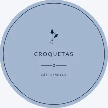
CroquetasPNG · 82 KB
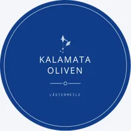
Kalamata OlivenPNG · 87 KB
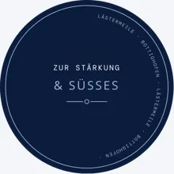
Zur Stärkung & SüssesPNG · 115 KB
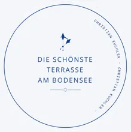
Die schönste TerrassePNG · 110 KB


04
Sticker
Vierzig Sticker: der Druckbogen mit Schnittlinien, jeder einzeln und alle als Bild.
42 Dateien

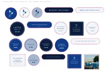
Sticker, Druckbogen A3PDF · 16,9 MB
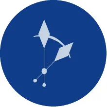
Sticker, alle einzelnPDF · 17,1 MB
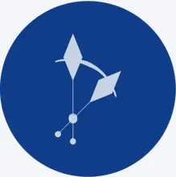
Die ZeigerPNG · 22 KB
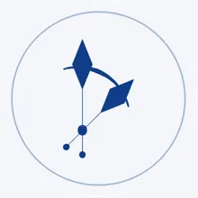
Die Zeiger auf PapierPNG · 30 KB
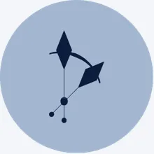
Die Zeiger im SeehimmelPNG · 18 KB Die WortmarkePNG · 18 KB
Die WortmarkePNG · 18 KB
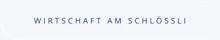
Die Wortmarke auf PapierPNG · 18 KB
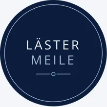
LästermeilePNG · 46 KB Tapas durchgehendPNG · 18 KB
Tapas durchgehendPNG · 18 KB
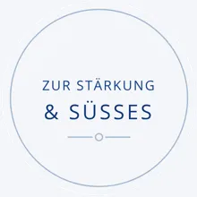
Zur Stärkung & SüssesPNG · 43 KB
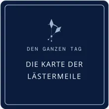
Den ganzen TagPNG · 22 KB
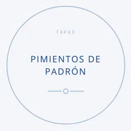
Pimientos De PadrónPNG · 40 KB
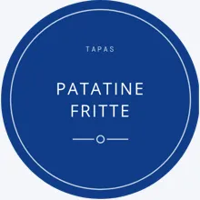
Patatine FrittePNG · 40 KB
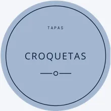
CroquetasPNG · 41 KB
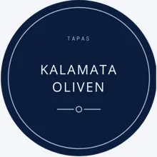
Kalamata OlivenPNG · 44 KB
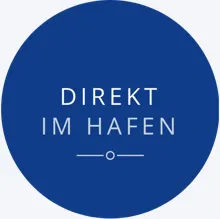
Direkt im HafenPNG · 23 KB
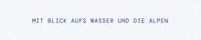
Mit Blick aufs Wasser und die AlpenPNG · 17 KB Die schönste TerrassePNG · 27 KB
Die schönste TerrassePNG · 27 KB
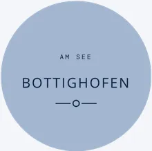
BottighofenPNG · 19 KB By Christian KuchlerPNG · 13 KB
By Christian KuchlerPNG · 13 KB
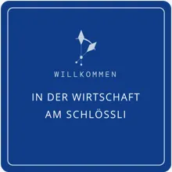
WillkommenPNG · 23 KB
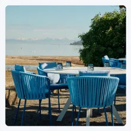
Foto: die Terrasse am MittagPNG · 653 KB
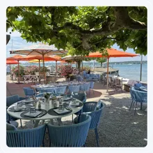
Foto: unter den PlatanenPNG · 933 KB Foto: TortelloniPNG · 410 KB
Foto: TortelloniPNG · 410 KB Foto: blaue StundePNG · 321 KB
Foto: blaue StundePNG · 321 KB Foto: DessertPNG · 271 KB
Foto: DessertPNG · 271 KB Foto: an der BarPNG · 420 KB
Foto: an der BarPNG · 420 KB Foto: von obenPNG · 458 KB
Foto: von obenPNG · 458 KB Foto: ein Glas am SeePNG · 179 KB
Foto: ein Glas am SeePNG · 179 KB 15 PunktePNG · 42 KB
15 PunktePNG · 42 KB Entdeckung des Jahres 2026PNG · 52 KB
Entdeckung des Jahres 2026PNG · 52 KB 91 von 100PNG · 20 KB
91 von 100PNG · 20 KB Favorit der InspektorenPNG · 19 KB
Favorit der InspektorenPNG · 19 KB Ein Besen statt eines SchildsPNG · 23 KB
Ein Besen statt eines SchildsPNG · 23 KB Die Karte nach LändernPNG · 16 KB
Die Karte nach LändernPNG · 16 KB Der KellerPNG · 51 KB
Der KellerPNG · 51 KB Zwei EtagenPNG · 23 KB
Zwei EtagenPNG · 23 KB LunchPNG · 21 KB
LunchPNG · 21 KB Die ZeitenPNG · 24 KB
Die ZeitenPNG · 24 KB Four Hands an BordPNG · 17 KB
Four Hands an BordPNG · 17 KB InstagramPNG · 16 KB
InstagramPNG · 16 KB Seestrasse 50PNG · 30 KB
Seestrasse 50PNG · 30 KB


05
Postkarten
15 Postkarten vom Hafen: mit Beschnitt für die Druckerei und als Sammelbogen.
2 Dateien


06
Beigaben
Was auf dem Tisch und an der Flasche liegt, jede Beigabe als PDF.
5 Dateien


07
Zeichen und Logo
Die Zeiger, der Name und das Logo in allen Farben des Hauses, als SVG für den Druck und als PNG, dazu die Farben und die Tapete.
43 Dateien
- ASEFarben · ASEASE · 1 KB
- CSSFarben · CSSCSS · 1 KB
- JSONFarben · JSONJSON · 3 KB
 Logo Seehimmel · PNGPNG · 68 KB
Logo Seehimmel · PNGPNG · 68 KB Logo Nacht · PNGPNG · 68 KB
Logo Nacht · PNGPNG · 68 KB Logo Original · PNGPNG · 35 KB
Logo Original · PNGPNG · 35 KB Logo Schwarz · PNGPNG · 64 KB
Logo Schwarz · PNGPNG · 64 KB Logo Weiss · PNGPNG · 68 KB
Logo Weiss · PNGPNG · 68 KB- ZIPAlles zur Marke · ZIPZIP · 1,1 MB
 Name Seehimmel · PNGPNG · 24 KB
Name Seehimmel · PNGPNG · 24 KB- SVGName Seehimmel · SVGSVG · 12 KB
 Name kurz Seehimmel · PNGPNG · 14 KB
Name kurz Seehimmel · PNGPNG · 14 KB- SVGName kurz Seehimmel · SVGSVG · 4 KB
 Name kurz Nacht · PNGPNG · 14 KB
Name kurz Nacht · PNGPNG · 14 KB- SVGName kurz Nacht · SVGSVG · 4 KB
 Name kurz Weiss · PNGPNG · 14 KB
Name kurz Weiss · PNGPNG · 14 KB- SVGName kurz Weiss · SVGSVG · 4 KB
 Name Nacht · PNGPNG · 23 KB
Name Nacht · PNGPNG · 23 KB- SVGName Nacht · SVGSVG · 12 KB
 Name Weiss · PNGPNG · 23 KB
Name Weiss · PNGPNG · 23 KB- SVGName Weiss · SVGSVG · 12 KB

 Tapete dunkel · PNGPNG · 4 KB
Tapete dunkel · PNGPNG · 4 KB- SVGTapete dunkel · SVGSVG · 4 KB
 Tapete dunkel · WEBPWEBP · 1 KB
Tapete dunkel · WEBPWEBP · 1 KB Tapete hell · PNGPNG · 4 KB
Tapete hell · PNGPNG · 4 KB- SVGTapete hell · SVGSVG · 4 KB

 Tapete hell · WEBPWEBP · 1 KB
Tapete hell · WEBPWEBP · 1 KB Zeichen Seehimmel · PNGPNG · 47 KB
Zeichen Seehimmel · PNGPNG · 47 KB- SVGZeichen Seehimmel · SVGSVG · 5 KB
 Zeichen Nacht · PNGPNG · 47 KB
Zeichen Nacht · PNGPNG · 47 KB- SVGZeichen Nacht · SVGSVG · 5 KB
 Zeichen Stuhlblau · PNGPNG · 47 KB
Zeichen Stuhlblau · PNGPNG · 47 KB- SVGZeichen Stuhlblau · SVGSVG · 5 KB
 Zeichen Weiss · PNGPNG · 46 KB
Zeichen Weiss · PNGPNG · 46 KB- SVGZeichen Weiss · SVGSVG · 5 KB
 Die Zeiger Seehimmel · PNGPNG · 26 KB
Die Zeiger Seehimmel · PNGPNG · 26 KB- SVGDie Zeiger Seehimmel · SVGSVG · 2 KB
 Die Zeiger Nacht · PNGPNG · 27 KB
Die Zeiger Nacht · PNGPNG · 27 KB- SVGDie Zeiger Nacht · SVGSVG · 2 KB
 Die Zeiger Stuhlblau · PNGPNG · 26 KB
Die Zeiger Stuhlblau · PNGPNG · 26 KB- SVGDie Zeiger Stuhlblau · SVGSVG · 2 KB
 Die Zeiger Weiss · PNGPNG · 27 KB
Die Zeiger Weiss · PNGPNG · 27 KB- SVGDie Zeiger Weiss · SVGSVG · 2 KB


08
Ansichten der Website
Jede Seite des Entwurfs als Bild, am Rechner und am Handy; im Ordner liegen dazu die weiteren Abschnitte jeder Seite.
20 Dateien
 Banketts & Gruppen, am RechnerJPG · 275 KB
Banketts & Gruppen, am RechnerJPG · 275 KB Die Karte, am RechnerJPG · 124 KB
Die Karte, am RechnerJPG · 124 KB Events, am RechnerJPG · 271 KB
Events, am RechnerJPG · 271 KB Gutschein, am RechnerJPG · 164 KB
Gutschein, am RechnerJPG · 164 KB Ihr Abend, am RechnerJPG · 161 KB
Ihr Abend, am RechnerJPG · 161 KB Kontakt, am RechnerJPG · 155 KB
Kontakt, am RechnerJPG · 155 KB Rechtliches, am RechnerJPG · 67 KB
Rechtliches, am RechnerJPG · 67 KB Startseite, am RechnerJPG · 1,1 MB
Startseite, am RechnerJPG · 1,1 MB Weinkarte, am RechnerJPG · 96 KB
Weinkarte, am RechnerJPG · 96 KB Über uns, am RechnerJPG · 216 KB
Über uns, am RechnerJPG · 216 KB Banketts & Gruppen, am HandyJPG · 172 KB
Banketts & Gruppen, am HandyJPG · 172 KB Die Karte, am HandyJPG · 122 KB
Die Karte, am HandyJPG · 122 KB Events, am HandyJPG · 182 KB
Events, am HandyJPG · 182 KB Gutschein, am HandyJPG · 194 KB
Gutschein, am HandyJPG · 194 KB Ihr Abend, am HandyJPG · 178 KB
Ihr Abend, am HandyJPG · 178 KB Kontakt, am HandyJPG · 138 KB
Kontakt, am HandyJPG · 138 KB Rechtliches, am HandyJPG · 115 KB
Rechtliches, am HandyJPG · 115 KB Startseite, am HandyJPG · 307 KB
Startseite, am HandyJPG · 307 KB Weinkarte, am HandyJPG · 103 KB
Weinkarte, am HandyJPG · 103 KB Über uns, am HandyJPG · 201 KB
Über uns, am HandyJPG · 201 KB


09
Das Profilbild, die Texte und die 48 Beiträge in voller Grösse, 1080 auf 1350.
50 Dateien


10
Mails
Die zehn Mails an Gäste als Vorlage zum Öffnen, im Ton und Kleid des Hauses.
10 Dateien
- 01 Ihre ReservationSeite · 6 KB
- 02 Tisch auf der TerrasseSeite · 6 KB
- 03 Ihr BankettSeite · 6 KB
- 04 Ihr GutscheinSeite · 6 KB
- 05 Unsere WinterpauseSeite · 6 KB
- 06 Ein Wochenende auf dem RheinSeite · 6 KB
- 07 Unser LunchSeite · 6 KB
- 08 Eine WeinempfehlungSeite · 6 KB
- 09 Danke für Ihren BesuchSeite · 6 KB
- 10 Auf der WartelisteSeite · 6 KB
Fehlt Ihnen eine Datei oder ein Format, sagen Sie es mir; ich lege es dazu.
Alles auf einen Blick